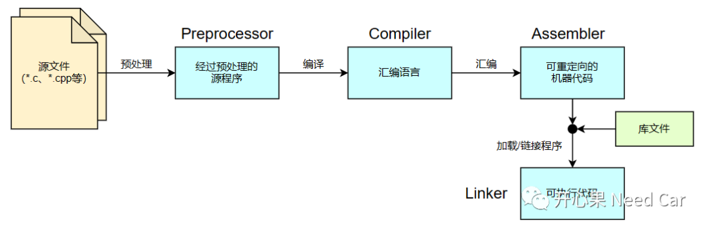
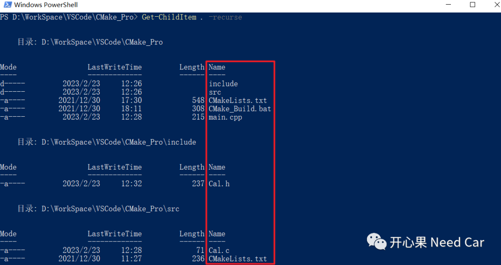
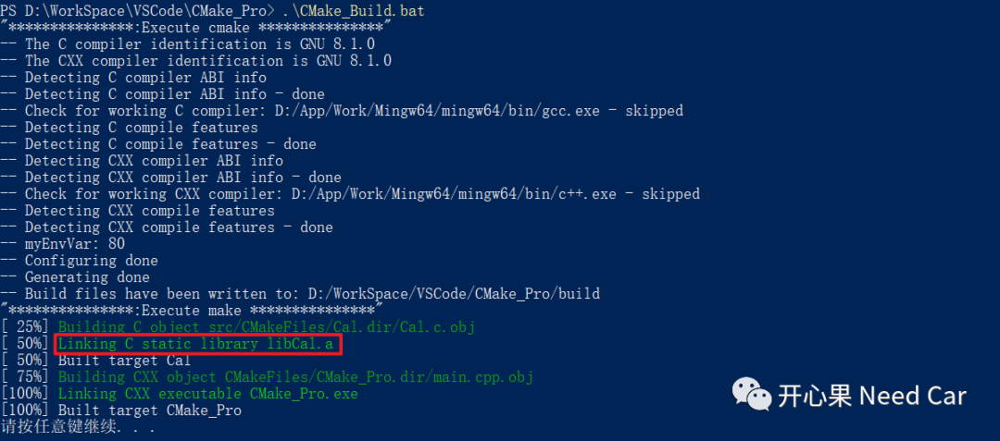
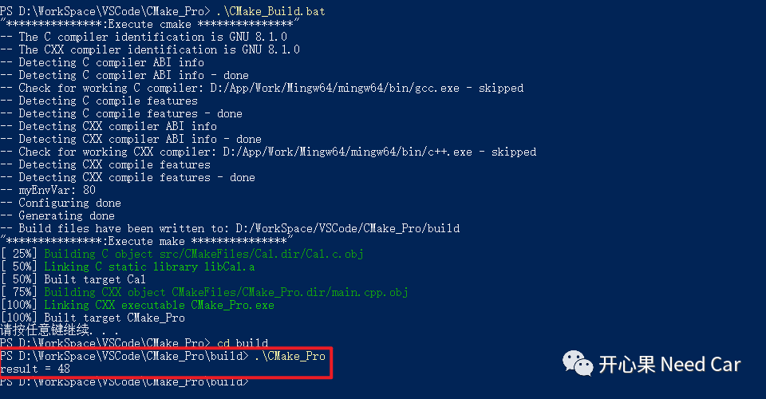

开心果 Need Car · 2023-02-24T12:00:00+08:00 · 微信原文
嵌入式开发，尤其SOA（Service Oriented Architecture，面向服务架构）的工程开发中，会碰到这样一种的场景：一部分业务功能使用C开发，且比较成熟，想直接复用。但是，业务层获取的底层服务是C++编写，如果要将两者放到一个进程里，需要将C、C++对应的源码交叉编译生成可执行文件。本文，针对C和C++交叉编译展开聊聊。
1、C与C++区别
首先，我们知道：C是面向过程（Procedure Oriented，简称PO）的编程语言，而C++是面向对象（Object Oriented ，简称OO）的编程语言。C++可以看作C的超集，C++包含了更多的特性。
（一）PO与OO的区别
PO优势：效率更高，因为PO语言（eg：C语言）不用实例化对象，消耗的资源更少；
PO不足：移植性差，维护成本高。
OO优势：复用性高，维护成本低；
OO不足：效率低，使用之前，需要先实例化一个对象（Object）。
2、编译原理
不管是C还是C++，这些易于人类阅读的高级语言，终究要进行编译，最终转换成机器可识别的二进制语言。
（三）汇编
由汇编器（Assembler），将汇编语言转换成机器语言（二进制文件），并进行重定位（Relocatable）。再由加载器（Loader）将重定向后的指令和数据放到内存指定位置。
（四）链接
最终，由链接器（Linker）将多个可重定位的机器代码文件（包括库文件）连接到一起形成可执行文件。
编译过程，如下所示：

3、基于CMake，进行C、C++交叉编译

typedef int(*calOpt)(int, int);extern "C"{extern int add(int x,int y);}
int add(int x,int y){return (x + y);}
# 查找当前目录下的所有源文件,并将名称保存到 CUR_DIR_SRCS 变量aux_source_directory(. CUR_DIR_SRCS)# 生成链接库add_library (Cal ${CUR_DIR_SRCS})target_include_directories(Cal PUBLIC "../include/")
int main(){int result;calOpt optFunc = add;/* 通过函数指针调用add函数 */result = optFunc(0x10, 0x20);std::cout << "result = " << result << std::endl;return 0;}
cmake_minimum_required(VERSION 3.10)project(CMake_Pro)set(CMAKE_CXX_STANDARD 11)set(CMAKE_CXX_STANDARD_REQUIRED True)set(ENV{myEnvVar} "80")MESSAGE(STATUS "myEnvVar: $ENV{myEnvVar}")add_subdirectory(src)add_executable(CMake_Pro main.cpp)target_include_directories(CMake_Pro PUBLIC "./include/")target_link_libraries(CMake_Pro Cal)
@echo offset buildDir=build@REM build的文件夹不存在则创建if not exist %buildDir% md %buildDir%if exist %buildDir% cd %buildDir%echo "***************:Execute cmake ***************"cmake -G"Unix Makefiles" ../echo "***************:Execute make ***************"makepause


往期精彩回顾
Autosar EcuM：APP由RUN到POST_RUN浅析